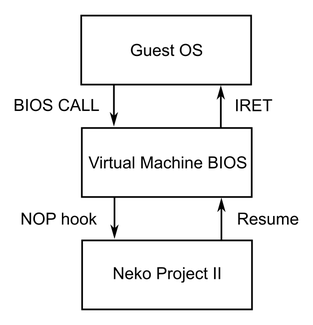
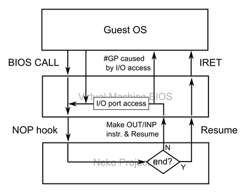

ねこープロジェクト21/Wではプロテクトモード・仮想86モードにおけるエミュレーション精度向上のために、BIOSによるI/Oポートアクセスのエミュレーション機能が搭載されています。
ねこープロジェクトIIのBIOSエミュレーションでは、特定にアドレスにあるnop命令をフックし、BIOS処理をエミュレータ本体で行った後に仮想マシンに制御を返すという動作をしています（いわゆるハイパーバイザコール）。 この機能によって、PC-98アーキテクチャ上で動く独自BIOSを持ったり実機BIOSを外部から供給したりする必要がなくなり、エミュレータ本体がBIOS処理を代行することで高い柔軟性を提供することが出来ます。
ところが、プロテクトモード・仮想86モードでは特定のI/Oポートアクセスを監視する機能を持っており、Windows等の高度な機能を持ったOSではBIOSによるI/Oポートアクセスが監視できる前提で設計されています。 つまり、BIOSの処理をエミュレータ本体で完結させてしまうと、仮想マシン内で動くプログラムはそれを検出できないことになります。 この結果、Windows系OSではタイマー処理やDOSプロンプトの不具合、IDEドライバの動作不良が発生してしまいます。
ねこープロジェクト21/WではBIOS処理をエミュレータ本体が代行するという基本を維持しながら、BIOSによるI/Oポートアクセスをエミュレーションする機能を搭載しています。
この機能は、エミュレータ本体によるBIOS処理でI/Oアクセスのエミュレーションが必要だと判断した場合に、BIOS内の特定領域にI/Oポートアクセス命令を動的に書き込み、CPUに実行させることで実現されています。
より詳細には、エミュレータ本体がBIOS内の領域にI/Oポートアクセス命令とNOP命令を動的に書き込み、CPUの命令ポインタをその場所に変更した後でCPU実行を再開します。 このようにするとCPUはI/Oポートアクセス命令を実行した直後に再びNOP命令を実行し、エミュレータ本体のBIOS処理に制御を戻すことが出来ます。 BIOS内の領域に動的に生成されたI/Oポートアクセス命令はゲストOSで監視可能であり、ゲストOSはI/Oポートアクセス命令を監視あるいは動作を変更することが出来ます。